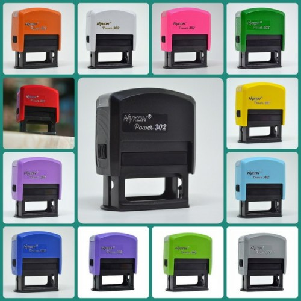

Carimbos Nykon
Cores ao seu estilo, tamanho 38x14mm máximo 3 linhas de texto.
Carimbos Colop
Cores ao seu estilo, tamanho 38x14mm máximo 3 linhas de texto.
Carimbos de bolso Trodat
Cores ao seu estilo, tamanho 38x14mm máximo 3 linhas de texto. Ótimo para área médica.